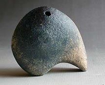
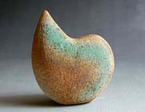
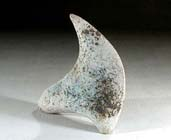

Minerva
Chango
Venezuelan Potter
Minerva
Chango vive y trabaja en Caracas, Venezuela; exhibe y vende
sus piezas en galerías en Venezuela y en algunas Galerías en los
Estados Unidos. Participa en Competencias Internacionales y en
eventos y exposiciones locales. Recientemente en Octubre, participó
en el I Encuentro Artesanal Andino en Bogotá Colombia. Es profesora
de cerámica en el Instituto
Universitario de Artes Visuales Armando Reverón.
Minerva
trabaja en el torno y con el modelado a mano, hace quemas de reducción
a alta temperatura, y le imprime huellas de oxido para enriquecer
los colores naturales. Su trabajo es funcional pero con un espíritu
escultórico que puede apreciarse desde sus frascos
y teteras,
hasta sus jarras
exóticas y sus vasijas
ensambladas, y también en su Nueva
Serie de Orgánicos.

Minerva
dice: “mi investigación propone la fusión entre lo funcional y
la pura expresión en la forma, lo que permitirá al espectador entender
cuando “una tetera puede no ser una tetera” o “cuando una forma
puede ser una sombra” y así establecer una experiencia personal
con las imágenes del inconsciente. Ante la propuesta, podríamos
experimentar la posibilidad de apreciar el objeto que vemos y más
aun, el objeto que creamos sin ningún prejuicio.”
More Articles
More Pots of the Week |